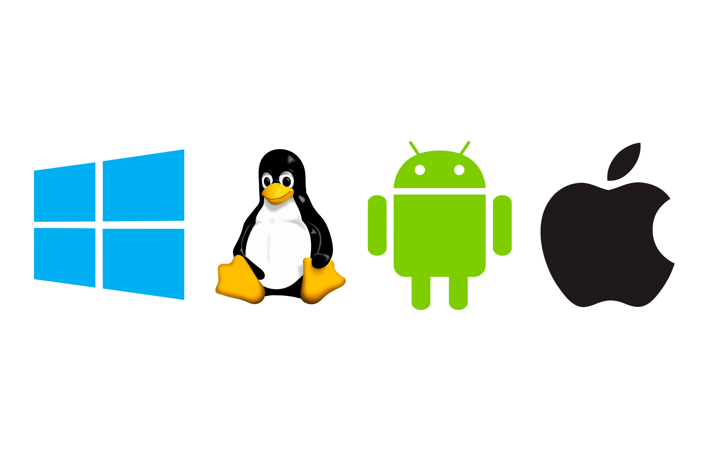

Operációs rendszerek
A tárgy célja:
- Hallgatók megismertetése az operációs rendszerek feladataival,
- A alapvető működési mechanizmusaival.
- Ismerjék meg az operációs rendszerek alapfogalmait,
- a folyamatkezelést,
- háttértárak működését,
- fájlrendszereket.
- A kurzus során megismerik a Unix/Linux rendszerek alapvető kezelését,
- az operációs rendszerek általános ismereteit.
A tárgy tematikája:
- Az operációs rendszer fogalom, osztályozás.
- Felületek az operációs rendszer magjához (kernel): felhasználói (UI) és programozói (API) felületek;
- Operációs rendszer működése.
- Operációs rendszer struktúrák.
- Események és kezelésük;
- Események és kezelésük.
- A folyamat koncepció.
- Processz kontextus és adatstruktúrái;
- A folyamat koncepció.
- Processz kontextus és adatstruktúrái.
- Processz kontroll.
- Processz állapotok és állapotátmenetek;
- Az időkiosztás (scheduling).
- A CPU ütemezés algoritmusai.
- A processz "kapcsolás" A taszk és a fonál koncepció;
- Processzek közti kommunikáció.
- Az üzenetsor és osztott memória mechanizmus rendszerhívásai;
- Erőforrás kezelés.
- Holtpont problémák.
- Konkurencia problémák.
- A kölcsönös kizárás és szinkronizálási mechanizmusok;
- A memória menedzselő alrendszer.
- Virtuális memóriamenedzselési alapok;
- Virtuális memóriamenedzselési alapok.
- Lapozó rendszerek;
- Az I/O alrendszer,
- eszközök kezelése,
- eszköz driverek;
- Fájlrendszer megvalósítási alap feladatok.
